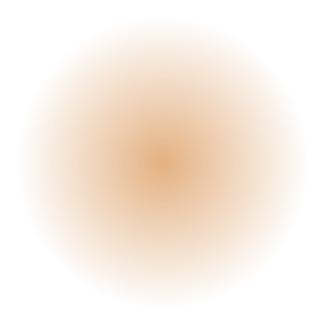
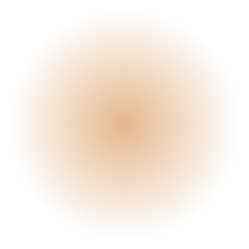
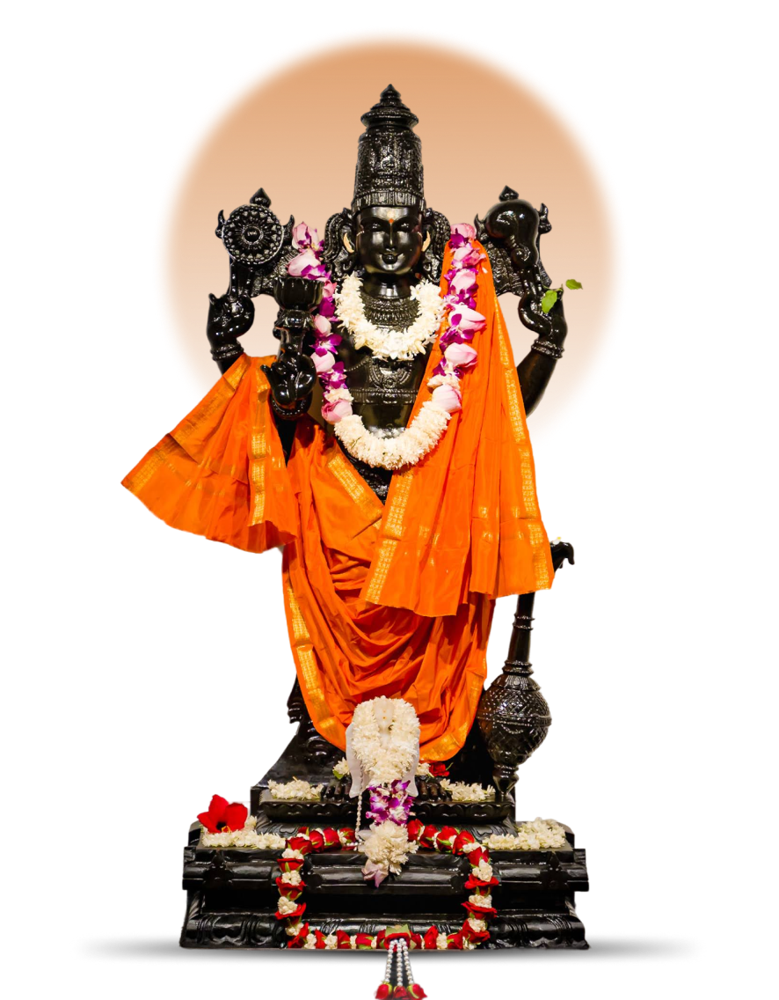
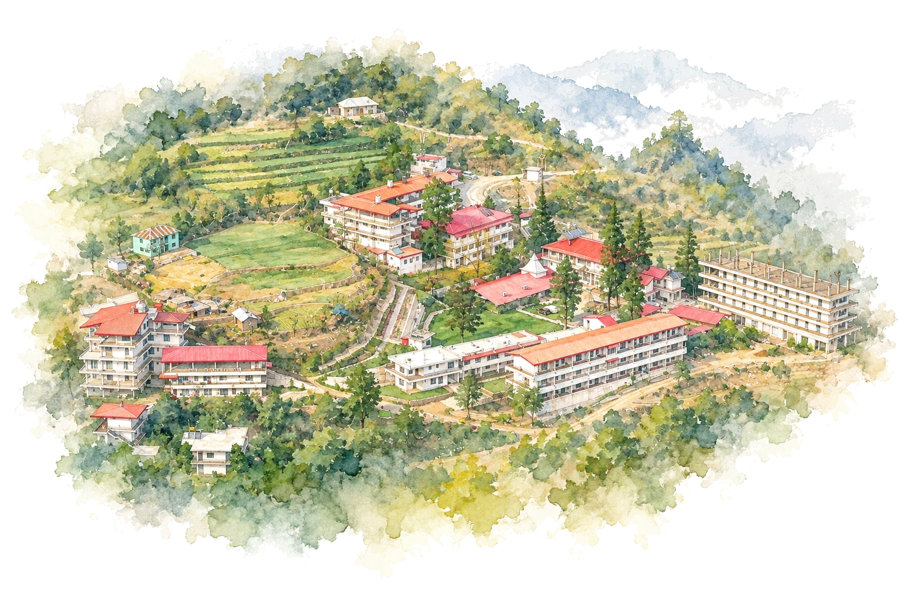
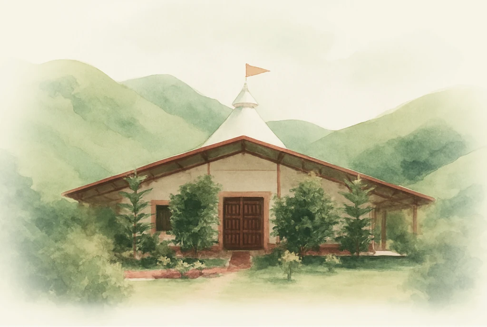
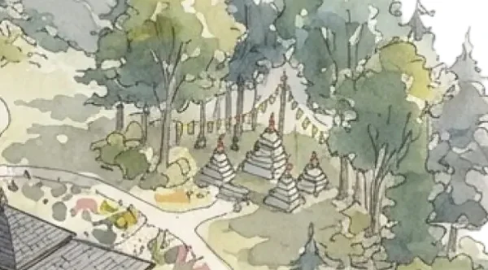
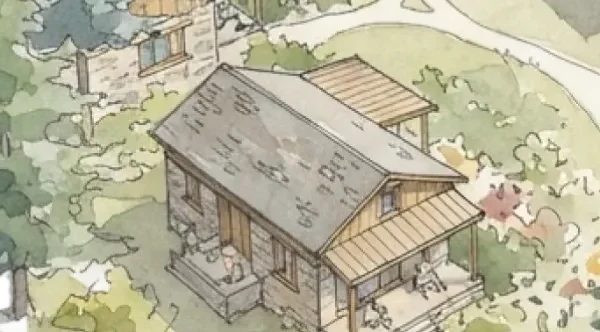

Sacred ritual
Atma Vimarsha
Contemplation of the Self
Sri Badrika Ashram @ Himalayan Foothills
Immersion at ashram
Sacred ritual
Contemplation of the Self
Sacred ritual
Ancient Secrets of the Sacred Flame
Sacred ritual
Awaken Your Guiding Light



The Divine
The consecrated idol of Śrī Hari is ceremoniously worshipped with Abhishekam — a holy bathing ritual accompanied by the transcendent chanting of the Vishnu Sahasranama or Lalita Sahasranama. On auspicious days, seekers gather to invoke and revere the awakened Divine Energies within.
The Ashram
Tucked into the quiet folds of the Shivalik hills, Sri Badrika Ashram is a sacred space to pause, turn inward and experience the living traditions of Sanatana Dharma. Here, devotion is woven into the everyday rhythm of prayer, silence, study and seva.
Explore Ashram

Shri Hari Mandir
A sacred space for meditation and reflection.
The temple hosts daily pujas and aarti ceremonies, which are open to all seekers. The serene atmosphere, combined with the majestic presence of the deity, creates an environment where one can transcend the mundane and experience profound peace.
Yagashala
The home of the sacred fire.
Havans and yagyas are performed here on auspicious days, offering ghee, grains and prayers into the consecrated fire. Seekers may sit in quiet witness as Vedic mantras fill the air.

Vatika gardens
Gardens that invite you to slow down.
Winding paths lead past flowering beds, prayer flags and small stupas beneath the trees. The vatika is a place for mindful walks, quiet japa and simply sitting with nature.

Meditation hall
A quiet hall for sitting in stillness.
Guided and silent meditation sessions are held through the day. Cushions and shawls are provided, and the hall stays open for personal practice in the early mornings and evenings.